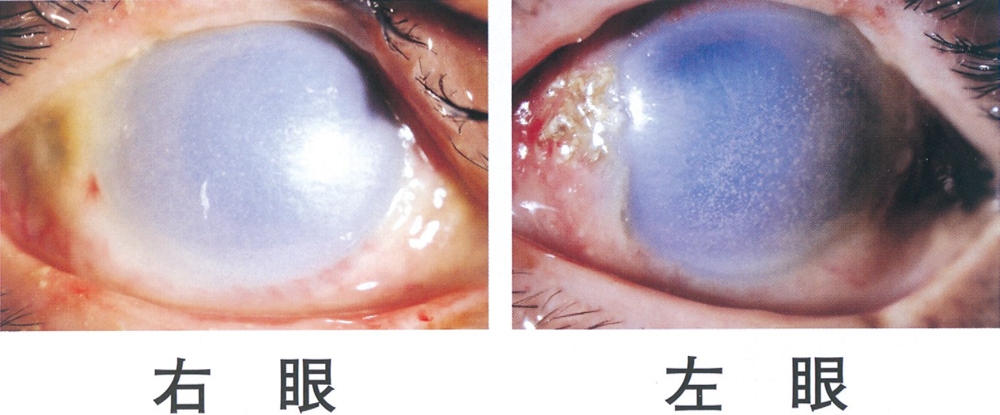

| 手段 | 内容 | 適応と禁忌 |
|---|---|---|
| 除染 | 衣服を脱がせて密封し、皮膚と眼を大量の水で洗う | 経皮吸収する物質（有機リン・サリン・アルカリ）では最優先。⚠️ 医療者自身の二次曝露を防ぐ（個人防護具） |
| 催吐 | 吐かせる | 現在は行わない——有効性が示されず、誤嚥と再曝露の害が大きい |
| 胃洗浄 | 胃管から洗浄液を出し入れする | 致死量の摂取から概ね1時間以内に限って考慮。禁忌：①石油製品（灯油・シンナー）②酸・アルカリ③意識障害（挿管せずに行わない） |
| 活性炭 | 消化管内で毒物を吸着する | 多くの薬毒物に有効。⚠️ 吸着しないもの＝重金属・鉄・リチウム・アルコール類・酸・アルカリ |
| 強制利尿・血液浄化 | 尿中排泄の促進／血液透析・血液吸着 | 分布容積が小さく蛋白結合率の低い物質（リチウム・メタノール・サリチル酸・テオフィリン） |
| 拮抗薬 | 有機リン → アトロピン＋プラリドキシム〈PAM〉／オピオイド → ナロキソン／ベンゾジアゼピン → フルマゼニル／アセトアミノフェン → N-アセチルシステイン／メタノール・エチレングリコール → ホメピゾール（エタノール）／一酸化炭素 → 酸素／シアン → ヒドロキソコバラミン、亜硝酸ナトリウム＋チオ硫酸ナトリウム／メトヘモグロビン血症 → メチレンブルー／ジギタリス → 抗ジゴキシン抗体／ヘパリン → プロタミン／ワルファリン → ビタミンK | |
| ⚠️ 順番を間違えない——①自分の安全 ②除染 ③ABC（気道・呼吸・循環）④吸収の阻害 ⑤拮抗薬 ⑥排泄の促進。拮抗薬から考え始めると、その間に患者は呼吸で死ぬ | ||
| 選択肢 | 解説 |
|---|---|
| ａ 胃洗浄 | 禁忌。酸・アルカリの摂取に胃洗浄を行ってはならない——①すでに腐食された食道・胃に胃管を通せば穿孔しうる②洗浄で腐食性物質が食道を再び通過し、損傷を二度繰り返す③嘔吐を誘発すれば同じことが起こる。胃洗浄の禁忌は「①石油製品 ②酸・アルカリ ③意識障害（気道確保なしに行わない）」の3つで、本例は②に真っ向から当たる。そもそも本例は「すぐに嘔吐した」と記載があり、摂取から時間も経っている——胃洗浄の適応（致死量の摂取から1時間以内）にも当たらない。 |
| ｂ 牛乳の飲用 | 行わない。希釈や中和を目的とした飲水・牛乳の投与は現在は推奨されない——①嘔吐を誘発して腐食性物質を食道へ再通過させる②中和反応そのものが発熱して熱傷を追加する③胃内容が増えて内視鏡の視野を妨げる。とくに酸とアルカリの中和は激しい発熱反応で、「酸を飲んだからアルカリで中和」は絶対にしてはいけない。そして何より、本例で今起きているのは消化管の問題ではなく気道の問題——喉頭浮腫と stridor がある患者に何かを飲ませること自体が誤嚥の危険である。 |
| ◯ ｃ 気道の確保 | これが正解。この患者は今まさに気道を失いつつある——①口唇の腫脹 ②咽頭から喉頭にかけての浮腫③前胸部で聴取する stridor（吸気性喘鳴＝上気道狭窄の音）④呼吸数30/分の頻呼吸。アルカリによる化学損傷の浮腫は時間とともに進行する——「今はまだ意識清明で会話できる」うちに確実な気道（気管挿管）を確保しなければ、数時間後には挿管も困難になる。気道熱傷とまったく同じ論理（→ 第2章 NO.13）。⚠️ 挿管は容易ではない——咽頭・喉頭が浮腫状なので視野が悪く、経験者が、輪状甲状靱帯切開の準備をしたうえで行う。ABC の A が脅かされている以上、どんな中毒であっても A が最優先される。 |
| ｄ 中心静脈路の確保 | 優先されない。血圧124/70mmHg・心拍数84/分と循環は安定しており、大量輸液を要する状態ではない。穿刺には時間がかかり、気胸・動脈穿刺という合併症のリスクもある——気道が危うい患者の前で費やしてよい時間ではない。輸液が必要になるとしても末梢静脈路で足りる（急速投与では太く短い末梢路のほうが速い）。優先順位を問う設問では「やってはいけないこと」だけでなく「やってもよいが今ではないこと」を見分ける必要がある。 |
| ｅ 副腎皮質ステロイド吸入 | まず行うものではない。すでに完成しつつある喉頭浮腫をステロイドの吸入で解除することはできない——効果発現までに時間がかかり、進行する気道閉塞には間に合わない。腐食性物質による食道損傷に対する全身ステロイド投与も、狭窄予防の効果は確立していない（むしろ感染と穿孔の発見を遅らせるという指摘がある）。吸入という投与経路自体にも問題がある——上気道が狭窄している患者では薬剤が末梢まで届かない。気道を確保してから、内視鏡による損傷の評価と全身管理に移るのが正しい順序。 |
| 選択肢 | ABCのどれか | 判定 |
|---|---|---|
| 胃洗浄 | 消化管（除染） | 禁忌（酸・アルカリ） |
| 牛乳の飲用 | 消化管（中和） | 推奨されない（嘔吐誘発・発熱反応） |
| 気道の確保 | A | stridor＋喉頭浮腫があり最優先 |
| 中心静脈路の確保 | C | 循環は安定＝今は不要 |
| 副腎皮質ステロイド吸入 | B（薬物療法） | 効果発現が遅く進行する閉塞に間に合わない |
| 中毒の設問で最も多い誤りは「原因物質に対する処置」から考え始めること——拮抗薬も除染も、気道と呼吸が保たれていて初めて意味を持つ | ||
| 音 | どこ | いつ | 代表 |
|---|---|---|---|
| stridor（吸気性喘鳴） | 上気道（喉頭・気管） | 主に吸気時 | 喉頭浮腫・急性喉頭蓋炎・クループ・気道異物 |
| wheezes（喘鳴） | 下気道（細気管支） | 主に呼気時 | 気管支喘息・COPD・心不全 |
| いびき様呼吸〈snoring〉 | 咽頭 | 吸気時 | 舌根沈下（意識障害） |
| ⚠️ stridor は「今すぐ気道を確保せよ」という音——聞こえなくなったら改善ではなく、気流そのものが失われた可能性を疑う | |||

| 選択肢 | 解説 |
|---|---|
| ａ 抗菌薬点眼 | 今ではない。角膜上皮が広範に脱落した状態では二次感染の予防に抗菌薬点眼を用いる——実際に治療の一部にはなる。しかし今この瞬間、組織を壊し続けているのは細菌ではなくアルカリそのものである。涙液pH が9 のままということは、眼表面にまだアルカリが残っていて反応が進行中だという意味——抗菌薬を差してもpH は下がらない。洗眼が終わり、pH が中性に戻ってから抗菌薬・ステロイド・人工涙液・散瞳薬などの薬物治療に移る。 |
| ｂ 副腎皮質ステロイド点眼 | 今ではない。急性期の強い炎症を抑える目的でステロイド点眼を短期間用いることはあるが、①アルカリが残っている段階では無意味②長期使用は角膜のコラーゲン合成を抑えて融解・穿孔を促す——受傷後1〜2週以降のステロイドは慎重に、というのが眼科の常識。ここでも順序は「まず洗い切る、それから薬」。本例は矯正視力が両眼とも眼前手動弁（手の動きがかろうじて分かる程度）まで落ちた重症例で、薬の選択を議論する段階に来ていない。 |
| ｃ 希釈ポビドンヨード点眼 | 行わない。希釈ポビドンヨードは眼内手術前の結膜囊消毒などに用いられるが、上皮が失われた角膜に対しては刺激となり、創傷治癒を妨げる。そして消毒薬にアルカリを中和する力はない——本例の課題は「感染」ではなく「残存するアルカリ」である。化学眼外傷で消毒薬を選ぶ発想そのものが誤り——眼表面に必要なのは「洗い流すための大量の等張液」だけ。 |
| ◯ ｄ 生理食塩液による洗眼続行 | これが正解。アルカリ眼外傷の治療は「涙液のpH が中性（7前後）に戻るまで洗い続けること」に尽きる。本例は10分間洗ってなお pH 9 ＝まだアルカリが残っており、組織を壊し続けている——だから答えは「続行」。洗眼の実際：局所麻酔薬を点眼して開瞼器をかけ、生理食塩液（または乳酸リンゲル液）を数リットル、30分〜数時間かけて持続的に流す。⚠️ 結膜囊（とくに上眼瞼を翻転した円蓋部）に残った固形の生石灰を綿棒などで除去する——粒子が残っていればいくら洗っても供給源になる。生石灰（酸化カルシウム CaO）は水と反応して水酸化カルシウムになり、その際に発熱する——化学損傷と熱傷が同時に起こる厄介な物質である。pH が中性化してから15〜30分後に再確認する（組織から遊離してpH が再上昇することがある）。 |
| ｅ ホウ酸液による洗眼に変更 | 行わない。「アルカリだから酸で中和する」という発想は誤り——中和反応は発熱を伴い、組織損傷を追加する。化学損傷の原則は「中和ではなく希釈と洗い流し」である（これは眼でも皮膚でも消化管でも同じ）。ホウ酸液はかつて洗眼液として広く用いられたが、現在は毒性の懸念から積極的には使われない。洗眼に用いるのは等張で刺激の少ない液——生理食塩液・乳酸リンゲル液が標準で、なければ大量の水道水でもよい（現場では時間のほうが重要）。 |
| 酸 | アルカリ | |
|---|---|---|
| 代表 | 硫酸（バッテリー液）・塩酸・フッ化水素酸 | 水酸化ナトリウム（洗浄剤）・生石灰・アンモニア・セメント・漂白剤 |
| 壊死の様式 | 凝固壊死——変性蛋白が痂皮となり深部への進行を止める | 融解壊死——脂質を鹸化し蛋白を溶かして深部へ進む |
| 重症度 | 相対的に軽い | 重い。前房内まで到達しうる |
| ⚠️ フッ化水素酸だけは例外——酸なのにフッ化物イオンが深部へ浸透し、カルシウムと結合して低Ca血症・不整脈を起こす。治療はグルコン酸カルシウム | ||
| Grade | 角膜 | 輪部虚血 | 予後 |
|---|---|---|---|
| Ⅰ | 上皮欠損のみ | なし | 良好 |
| Ⅱ | 混濁するが虹彩の詳細は見える | 1/3未満 | 良好 |
| Ⅲ | 上皮全欠損・虹彩の詳細が見えない | 1/3〜1/2 | 不良 |
| Ⅳ | 角膜が不透明で虹彩も瞳孔も見えない | 1/2超 | 極めて不良 |
| 結膜の「充血」ではなく「白色化」が悪いサイン——血管が焼けて血流が失われた結果なので、一見おとなしく見えるのに最も重い。本例の写真は輪部が白く、GradeⅢ〜Ⅳ に相当する | |||
| 管理 | 内容 | 本問との関係 |
|---|---|---|
| 作業環境管理 | 作業環境測定・局所排気装置・有害物質の代替 | 職場に何があるか＝SDS |
| 作業管理 | 保護具・作業時間・作業姿勢 | 曝露時の作業内容 |
| 健康管理 | 一般健康診断・特殊健康診断・生物学的モニタリング | 定期健診・特殊健診の結果 |
| 選択肢ｂ〜ｅはこの3管理にきれいに対応している——ａだけがメンタルヘルス対策という別の枠組みに属する | ||
| 選択肢 | 解説 |
|---|---|
| ◯ ａ 直近のストレスチェックの結果 | これが正解（有用でない）。ストレスチェックは労働安全衛生法に基づき常時50人以上の労働者を使用する事業場に義務づけられた「心理的な負担の程度を把握するための検査」で、目的はメンタルヘルス不調の一次予防である。化学物質の同定にも急性期の治療方針の決定にも何ら寄与しない。加えて制度上の性質からも照会に適さない——ストレスチェックの結果は実施者（医師・保健師等）から本人に直接通知され、本人の同意なく事業者が知ることはできない。つまり「勤務先に照会する」対象として制度上そもそも想定されていない。将来のPTSD など精神面の評価に間接的な参考になりうる、という留保は付くが、いま問われている「治療方針の決定」には結びつかない。 |
| ｂ 直近の定期健康診断の結果 | 有用である。労働安全衛生法により事業者は年1回（特定業務従事者は6か月ごと）の定期健康診断を義務づけられている——身長・体重・視力・聴力・胸部エックス線・血圧・貧血・肝機能・血中脂質・血糖・尿・心電図が項目に含まれる。これが治療に効く理由：曝露前のベースラインが分かる——今の肝機能・腎機能・血液所見が「もともとそうだったのか」「今回の曝露で変わったのか」を判別できる。基礎疾患や常用薬の情報も治療方針に影響する。 |
| ｃ 直近の特殊健康診断の結果 | 有用である。特殊健康診断は「特定の有害業務に従事する労働者」に対して義務づけられた健診で、有機溶剤・鉛・特定化学物質・高気圧業務・電離放射線・石綿などが対象。ここには生物学的モニタリング〈BM〉の項目が含まれる——尿中馬尿酸（トルエン）、尿中トリクロロ酢酸（トリクロロエチレン）、血中鉛と尿中δ-ALA（鉛）、尿中β2-ミクログロブリン（カドミウム）など。「どの特殊健診を受けているか」が分かれば、それだけで扱っている化学物質の系統が推定できる——本人が物質名を知らない本例では極めて価値が高い情報。 |
| ｄ 安全データシート | 有用である。安全データシート〈SDS：Safety Data Sheet〉は、化学物質を譲渡・提供する事業者が危険有害性情報を記載して交付する文書である。記載事項：製品と会社の情報／危険有害性の要約／組成と成分情報／応急措置／火災時の措置／漏出時の措置／取扱いと保管／曝露防止と保護具／物理化学的性質／安定性と反応性／有害性情報／廃棄・輸送・適用法令。まさに「何を浴びたか」と「どう対処するか」が1冊にまとまった文書——原因物質が不明な化学損傷では、これを入手することが最も効率のよい一手である。 |
| ｅ 曝露時の作業内容 | 有用である。中毒学の基本は「何を・どれだけ・どの経路で・どのくらいの時間」——物質名だけ分かっても、量と経路と時間が分からなければ重症度は評価できない。作業内容から分かること：①使用していた薬剤の濃度と量②開放系か密閉系か（吸入曝露の程度）③加熱・加圧の有無（蒸気やヒュームの発生）④保護具の着用状況 ⑤他に曝露した同僚がいないか。⑤は公衆衛生上も重要——同じ現場で複数の被災者が出ていれば集団災害として動く必要がある。 |
| 道具 | 根拠と内容 | 誰が持っているか |
|---|---|---|
| 安全データシート〈SDS〉 | 労働安全衛生法・化学物質排出把握管理促進法〈PRTR法〉・毒物及び劇物取締法に基づき、化学物質の譲渡・提供時に交付が義務づけられた文書。成分・有害性・応急措置・保護具が載る | 事業場（職場） |
| 一般健康診断 | 雇入時／年1回（特定業務従事者は6か月ごと）。身長・体重・血圧・視力聴力・胸部Xp・血液・尿・心電図 | 事業者（結果の保存5年） |
| 特殊健康診断 | 有害業務従事者に義務——有機溶剤・鉛・特定化学物質・高気圧・電離放射線・石綿・四アルキル鉛。生物学的モニタリングを含む | 事業者（特別管理物質は30年保存） |
| 作業環境測定 | 粉じん・有機溶剤・特定化学物質などの作業場で実施。管理区分1〜3で評価 | 事業者 |
| ストレスチェック | 労働安全衛生法（2015年〜）。常時50人以上の事業場に義務・年1回。結果は実施者から本人へ直接通知され、本人の同意なく事業者に提供されない | 実施者（本人） |
| 産業医 | 常時50人以上で選任義務（1,000人以上は専属）。職場巡視・健康管理・意見具申 | 事業場 |
| 系統 | 受容体 | 症状 | 効く薬 |
|---|---|---|---|
| ムスカリン様 （副交感神経の亢進） | ムスカリン受容体 | DUMBELS——Diarrhea（下痢）／Urination（排尿）／Miosis（縮瞳）／Bradycardia・Bronchorrhea・Bronchospasm（徐脈・気道分泌亢進・気管支攣縮）／Emesis（嘔吐）／Lacrimation（流涙）／Salivation・Sweating（流涎・発汗） | アトロピン |
| ニコチン様 （神経筋接合部・交感神経節） | ニコチン受容体 | 筋線維束攣縮〈fasciculation〉・筋力低下・呼吸筋麻痺・頻脈・高血圧・散瞳（ムスカリン様と逆向きの所見が混じるのはこのため） | プラリドキシム〈PAM〉 |
| 中枢神経 | — | 意識障害・けいれん・呼吸中枢の抑制 | アトロピン（中枢へ移行する）／抗けいれん薬 |
| 2剤の役割分担が国試の焦点——アトロピンはムスカリン受容体を「塞ぐ」だけで酵素は元に戻らず、筋線維束攣縮と呼吸筋麻痺には効かない。PAM はリン酸化されたコリンエステラーゼからリン酸基を外して酵素を再賦活する——ただし時間が経つと「エイジング」が起こって不可逆になるので、早期投与でなければ効かない。アトロピンの投与量は「気道分泌が乾くまで」を指標に大量・反復投与する（瞳孔径や心拍数だけで決めない） | |||
| 選択肢 | 解説 |
|---|---|
| ａ 催 吐 | 禁忌。意識障害のある患者に催吐を行えば誤嚥する——本例は痛み刺激で開眼せず発語もない（JCSⅢ-100 相当）で、気道防御反射が期待できない。そもそも催吐は現在の中毒診療では行われない——有効性が示されず、誤嚥・食道損傷・遅発性の意識障害中の嘔吐という害のほうが大きい。かつて用いられたトコンシロップは推奨から外れて久しい。 |
| ｂ 胃洗浄 | 直ちに行うべき処置ではない。有機リン剤を大量に経口摂取した直後であれば胃洗浄が考慮されることはある——ただし「気道を確保したうえで」が絶対条件。本例は意識障害があり、気管挿管前に胃洗浄を行えば誤嚥する。しかも呼気に有機溶媒臭があり、有機リン剤の溶剤（石油系）を含む可能性が高い——石油製品は胃洗浄の禁忌（誤嚥すると化学性肺炎を起こす）。順序としてもABCが先で、消化管除染は後。 |
| ◯ ｃ 気管挿管 | これが正解。有機リン中毒の死因は呼吸不全であり、本例はすでにその入口にいる——①呼吸数8/分（呼吸中枢の抑制と呼吸筋の障害）②リザーバー付マスクで10L/分の酸素を投与してもSpO2 88％③両側にwheezes（気管支攣縮と気道分泌の亢進）④鼻汁・流涎で気道が水浸しになっている⑤意識障害で気道を守れない。呼吸不全の原因が3方向から同時に来ている：中枢性（呼吸中枢の抑制）＋末梢性（ニコチン様作用による呼吸筋麻痺）＋気道性（ムスカリン様作用による分泌亢進と気管支攣縮）。だからアトロピンやPAM を投与する前に、まず気道を確保して確実な換気を得る——拮抗薬は換気を保証しない。⚠️ スキサメトニウム（脱分極性筋弛緩薬）は避ける——コリンエステラーゼで分解される薬なので作用が遷延する。 |
| ｄ 強制利尿 | 無効。強制利尿が有効なのは、分布容積が小さく蛋白結合率が低く、主に腎から未変化体で排泄される物質（サリチル酸・リチウムなど）。有機リン剤は脂溶性が高く組織へ広く分布するので、尿から追い出すという発想が成り立たない。脂溶性が高いことは治療上も重要——脂肪組織に蓄積した薬剤が徐々に血中へ戻るため、症状が数日にわたって遷延したり再燃したりする。だから改善しても長期の観察が必要。 |
| ｅ 活性炭投与 | 直ちに行うべき処置ではない。活性炭は有機リン剤を吸着するので、経口摂取例では投与を考慮する——ただし胃洗浄と同じく「気道を確保してから」。意識障害のある患者に経口・経鼻胃管で活性炭を入れれば誤嚥する——活性炭の誤嚥は重篤な肺障害を起こす。順序は「①除染 ②気道確保・換気 ③拮抗薬（アトロピン＋PAM）④消化管除染」で、設問が「除染後直ちに」と限定している以上、答えは②になる。 |
| 原因 | 瞳孔 | 決め手になる所見 | 拮抗薬 |
|---|---|---|---|
| 有機リン・カーバメート | 著明な縮瞳 | 流涎・鼻汁・発汗・気道分泌亢進・筋線維束攣縮・徐脈／血清ChE低下 | アトロピン＋PAM |
| オピオイド | pinpoint | 呼吸抑制・意識障害の3徴／分泌亢進は無い・皮膚は乾燥／注射痕 | ナロキソン |
| 橋出血 | pinpoint（対光反射は保たれる） | 四肢麻痺・高体温・除脳硬直／頭部CTで診断 | — |
| バルビツレート・エタノール | 縮瞳のことが多い | 意識障害・呼吸抑制 | —（支持療法） |
| 逆に散瞳をきたすもの——抗コリン薬（アトロピン・三環系抗うつ薬・抗ヒスタミン薬・ブスコパン）／交感神経刺激薬（コカイン・覚醒剤）／ボツリヌス毒素／低酸素脳症。⚠️ 抗コリン中毒は「熱く・赤く・乾いて・見えず・狂って」——hot as a hare, red as a beet, dry as a bone, blind as a bat, mad as a hatter | |||
| アセチルコリンエステラーゼ〈AChE〉 | ブチリルコリンエステラーゼ〈BuChE〉 | |
|---|---|---|
| 別名 | 真性ChE・赤血球ChE | 偽性ChE・血清ChE |
| 存在部位 | 神経シナプス・神経筋接合部・赤血球膜 | 肝で合成され血漿中に存在 |
| 臨床的意味 | 中毒の重症度をよく反映する | 感度が高く、一般検査で測れる。ただし特異度は低い |
| 回復 | 赤血球の寿命に依存し数か月かかる | 肝での合成に伴い数週で回復 |
| ⚠️ 血清ChE が低下する有機リン以外の原因——肝硬変・肝炎（合成低下）／低栄養／妊娠／悪性腫瘍／先天性ChE欠損。逆に上昇するのはネフローゼ症候群・脂肪肝・甲状腺機能亢進症 | ||
| 系統 | 受容体 | 症状 | 効く薬 |
|---|---|---|---|
| ムスカリン様 （副交感神経の亢進） | ムスカリン受容体 | DUMBELS——Diarrhea（下痢）／Urination（排尿）／Miosis（縮瞳）／Bradycardia・Bronchorrhea・Bronchospasm（徐脈・気道分泌亢進・気管支攣縮）／Emesis（嘔吐）／Lacrimation（流涙）／Salivation・Sweating（流涎・発汗） | アトロピン |
| ニコチン様 （神経筋接合部・交感神経節） | ニコチン受容体 | 筋線維束攣縮〈fasciculation〉・筋力低下・呼吸筋麻痺・頻脈・高血圧・散瞳（ムスカリン様と逆向きの所見が混じるのはこのため） | プラリドキシム〈PAM〉 |
| 中枢神経 | — | 意識障害・けいれん・呼吸中枢の抑制 | アトロピン（中枢へ移行する）／抗けいれん薬 |
| 2剤の役割分担が国試の焦点——アトロピンはムスカリン受容体を「塞ぐ」だけで酵素は元に戻らず、筋線維束攣縮と呼吸筋麻痺には効かない。PAM はリン酸化されたコリンエステラーゼからリン酸基を外して酵素を再賦活する——ただし時間が経つと「エイジング」が起こって不可逆になるので、早期投与でなければ効かない。アトロピンの投与量は「気道分泌が乾くまで」を指標に大量・反復投与する（瞳孔径や心拍数だけで決めない） | |||
| 選択肢 | 解説 |
|---|---|
| ａ カリウム | 鑑別に有用でない。意識障害の鑑別として電解質を確認すること自体は正しい（AIUEOTIPS の E＝Electrolytes）が、カリウム値が有機リン中毒を肯定も否定もしない。設問は「鑑別診断において有用な項目」を問うている——つまり「疑っている疾患を確定できる検査」でなければならない。一般的な意識障害のスクリーニング項目と、特定の疾患を決める項目とを区別すること。 |
| ｂ アミラーゼ | 鑑別に有用とはいえない。興味深いことに、有機リン中毒では実際に血清アミラーゼが上昇することがある——コリン作動性刺激による唾液腺の分泌亢進と、合併しうる急性膵炎による。しかし特異性がまったく無い：急性膵炎・唾液腺疾患・腸管虚血・腎不全・マクロアミラーゼ血症などで上昇するので、これで有機リン中毒を診断することはできない。「上がることがある」と「診断に使える」は別。 |
| ｃ マグネシウム | 鑑別に有用でない。低Mg血症はけいれん・不整脈（torsades de pointes）・テタニーの原因になり、高Mg血症は腱反射の消失・呼吸抑制を起こす——意識障害と筋症状を見たときの鑑別に挙がりうる。しかし本例の所見は高Mg血症では説明できない：①縮瞳が説明できない ②流涎・鼻汁・発汗が説明できない③筋線維束攣縮はむしろ逆向き（高Mg血症では神経筋伝達が抑制される）④「腱反射の異常を認めない」と明記されている。設問が腱反射に触れているのは、この肢を消すための一文と読める。 |
| ｄ ヘモグロビン | 鑑別に有用でない。そもそもヘモグロビンは血液生化学検査ではなく血算（血液一般検査）の項目である。貧血の有無は本例の病態と関係がない——出血を示唆する所見も、貧血で説明できる所見も無い。もし「一酸化炭素ヘモグロビン〈CO-Hb〉」であれば話は別（意識障害の鑑別に有用）だが、単なるヘモグロビンでは何も分からない。選択肢が「よく測る検査項目」を並べて判断を迷わせる構造になっている。 |
| ◯ ｅ コリンエステラーゼ | これが正解。有機リン剤はコリンエステラーゼを阻害することで中毒症状を起こす——だから酵素活性の低下は病態そのものの直接の証拠になる。2種類のコリンエステラーゼ：①血清（偽性）コリンエステラーゼ〈BuChE〉——肝で作られ、一般の生化学検査で測れる。感度が高く反応も速いが、肝障害・低栄養でも低下する。②赤血球コリンエステラーゼ〈AChE〉——神経シナプスの酵素と同じもので、中毒の重症度をより正確に反映するが測定できる施設が限られる。実務では血清ChE を測り、経時的に追って回復を確認する。⚠️ 結果を待って治療を始めない——臨床症状が揃っていればアトロピンとPAM は検査値の前に投与する。治療的診断（アトロピンへの反応）も診断の助けになる。 |
| 中毒 | 測るもの | 性質 |
|---|---|---|
| 有機リン | 血清ChE・赤血球ChE | 酵素活性の低下＝阻害の結果を測る（間接） |
| 一酸化炭素 | CO-Hb（CO-オキシメータ） | 結合体を直接測る。⚠️ 酸素投与で低下するので低値でも否定できない |
| メトヘモグロビン血症 | メトヘモグロビン濃度 | 直接測定。チョコレート色の血液が手がかり |
| シアン | 乳酸（著明高値）・静脈血酸素飽和度の上昇 | シアン濃度は間に合わないので「代謝の異常」から推定する |
| アセトアミノフェン | 血中濃度＋摂取からの時間 | Rumack-Matthew nomogram で治療適応を決める |
| メタノール・エチレングリコール | 浸透圧ギャップ・アニオンギャップ | 血中濃度が測れなくても代謝の異常から迫れる |
| 鉛 | 血中鉛・尿中δ-ALA・赤血球プロトポルフィリン | 生物学的モニタリングの項目でもある |
| 共通する考え方——「毒物そのもの」が測れないときは「毒物が壊した機能」を測る。ChE、CO-Hb、乳酸、浸透圧ギャップはいずれもこの発想 | ||
| アトロピン | プラリドキシム〈PAM〉 | |
|---|---|---|
| 作用 | ムスカリン受容体を競合的に遮断（＝席を塞ぐ） | リン酸化されたコリンエステラーゼからリン酸基を外して酵素を再賦活（＝壊れたものを直す） |
| 効く症状 | ムスカリン様（気道分泌・気管支攣縮・徐脈・流涎・発汗・縮瞳・腸蠕動）＋中枢症状 | ニコチン様（筋線維束攣縮・筋力低下・呼吸筋麻痺） |
| 効かない症状 | ニコチン様には無効——神経筋接合部はニコチン受容体だから | — |
| 投与の指標 | 気道分泌が乾くまで（瞳孔径や心拍数では決めない）。数mg を数分ごとに反復し、総量が数十〜数百mgになることもある | できるだけ早く——「エイジング」が起こると外せなくなる |
| 限界 | 過量では抗コリン中毒（高体温・せん妄・尿閉） | カーバメート中毒には不要（結合が可逆的で自然に回復する） |
| 手段 | 内容 | 適応と禁忌 |
|---|---|---|
| 除染 | 衣服を脱がせて密封し、皮膚と眼を大量の水で洗う | 経皮吸収する物質（有機リン・サリン・アルカリ）では最優先。⚠️ 医療者自身の二次曝露を防ぐ（個人防護具） |
| 催吐 | 吐かせる | 現在は行わない——有効性が示されず、誤嚥と再曝露の害が大きい |
| 胃洗浄 | 胃管から洗浄液を出し入れする | 致死量の摂取から概ね1時間以内に限って考慮。禁忌：①石油製品（灯油・シンナー）②酸・アルカリ③意識障害（挿管せずに行わない） |
| 活性炭 | 消化管内で毒物を吸着する | 多くの薬毒物に有効。⚠️ 吸着しないもの＝重金属・鉄・リチウム・アルコール類・酸・アルカリ |
| 強制利尿・血液浄化 | 尿中排泄の促進／血液透析・血液吸着 | 分布容積が小さく蛋白結合率の低い物質（リチウム・メタノール・サリチル酸・テオフィリン） |
| 拮抗薬 | 有機リン → アトロピン＋プラリドキシム〈PAM〉／オピオイド → ナロキソン／ベンゾジアゼピン → フルマゼニル／アセトアミノフェン → N-アセチルシステイン／メタノール・エチレングリコール → ホメピゾール（エタノール）／一酸化炭素 → 酸素／シアン → ヒドロキソコバラミン、亜硝酸ナトリウム＋チオ硫酸ナトリウム／メトヘモグロビン血症 → メチレンブルー／ジギタリス → 抗ジゴキシン抗体／ヘパリン → プロタミン／ワルファリン → ビタミンK | |
| ⚠️ 順番を間違えない——①自分の安全 ②除染 ③ABC（気道・呼吸・循環）④吸収の阻害 ⑤拮抗薬 ⑥排泄の促進。拮抗薬から考え始めると、その間に患者は呼吸で死ぬ | ||
| 選択肢 | 解説 |
|---|---|
| ａ ナロキソン | 適応がない。ナロキソンはオピオイド受容体の拮抗薬で、モルヒネ・ヘロイン・フェンタニル・コデインなどによる呼吸抑制と意識障害を劇的に改善する。オピオイド中毒と有機リン中毒は「意識障害＋縮瞳＋呼吸抑制」という点で似ている——だからこそ区別が問われる。決定的な違いは「分泌」：有機リン中毒では鼻汁・流涎・発汗・気道分泌が著明に亢進するが、オピオイド中毒では皮膚は乾燥している。筋線維束攣縮もオピオイドでは説明できない。 |
| ◯ ｂ アトロピン | これが正解。アトロピンはムスカリン受容体の競合的拮抗薬で、過剰なアセチルコリンが受容体に結合するのを「席を先に取って」防ぐ。何が改善するか：気道分泌の亢進・気管支攣縮・徐脈・流涎・発汗・腸蠕動亢進・縮瞳——すなわちムスカリン様症状のすべて。⚠️ 投与量の指標は瞳孔でも心拍数でもなく「気道分泌が乾くこと」——死因が気道分泌と気管支攣縮による呼吸不全だから。通常量では足りず、数mg を数分ごとに反復し、重症例では総投与量が数十〜数百mg に達することもある。アトロピンだけでは不十分：ニコチン様症状（筋線維束攣縮・呼吸筋麻痺）には効かないので、プラリドキシム〈PAM〉を併用してコリンエステラーゼそのものを再賦活する。本例に筋線維束攣縮がある以上、PAM の適応でもある——選択肢にPAM が無いので、答えはアトロピン。 |
| ｃ フルマゼニル | 適応がない。フルマゼニルはベンゾジアゼピン受容体の拮抗薬。本例には「20歳ころ、うつ病の治療歴あり」という記載があり、向精神薬の過量服薬を疑う余地はある——しかしベンゾジアゼピン中毒では縮瞳・流涎・発汗・筋線維束攣縮は起こらない。⚠️⚠️ フルマゼニルは安易に使ってはいけない薬：①三環系抗うつ薬などけいれん閾値を下げる薬を併用していると難治性けいれんを誘発する②ベンゾジアゼピン依存者では急激な離脱を起こす③半減期が短く、覚醒後に再び意識障害へ戻る。「診断的に使ってみる」という発想は危険。 |
| ｄ 亜硝酸ナトリウム | 適応がない。亜硝酸ナトリウムはシアン中毒の拮抗薬で、意図的にメトヘモグロビンを作り、シアンイオンを（シトクロム酸化酵素より）そちらへ引き寄せてシアンメトヘモグロビンとして捕捉する——続いてチオ硫酸ナトリウムを投与し、ロダネーゼによってチオシアン酸として尿へ排泄させる。シアン中毒は火災（ウレタン・アクリルの燃焼）やメッキ工場で起こり、著明な乳酸アシドーシスと皮膚紅潮が特徴。⚠️ 硫化水素中毒にも亜硝酸ナトリウムを用いることがある（PDFのDr.アドバイスに記載）。いずれにせよ本例の病態とは無関係。 |
| ｅ チオ硫酸ナトリウム | 適応がない。チオ硫酸ナトリウムもシアン中毒の拮抗薬で、硫黄を供与してロダネーゼによるシアンの解毒（チオシアン酸への変換）を助ける。亜硝酸ナトリウムとセットで用いられる古典的な組合せだが、近年はヒドロキソコバラミン（ビタミンB12a）が第一選択になりつつある——シアンと結合してシアノコバラミンとなり尿から排泄され、メトヘモグロビンを作らないので一酸化炭素中毒を合併する火災被災者にも安全に使える。本例はシアン中毒ではない。 |
| 中毒 | 拮抗薬・特異的治療 | 要点 |
|---|---|---|
| 有機リン・神経剤 | アトロピン＋プラリドキシム〈PAM〉 | アトロピンは「分泌が乾くまで」／PAM は早期 |
| カーバメート | アトロピン（PAMは不要） | 結合が可逆的 |
| オピオイド | ナロキソン | 半減期が短く再燃しうる |
| ベンゾジアゼピン | フルマゼニル（慎重に） | 三環系併用でけいれん誘発・依存者で離脱 |
| アセトアミノフェン | N-アセチルシステイン | 肝壊死の予防。血中濃度と時間で適応を決める |
| メタノール・エチレングリコール | ホメピゾール（またはエタノール）＋血液透析 | アルコール脱水素酵素を阻害して有害代謝物の生成を止める |
| 一酸化炭素 | 高濃度酸素・高気圧酸素 | CO-Hb の半減期を短縮 |
| シアン | ヒドロキソコバラミン／亜硝酸ナトリウム＋チオ硫酸ナトリウム | 火災でCO中毒を合併する例ではヒドロキソコバラミンを選ぶ |
| メトヘモグロビン血症 | メチレンブルー | G6PD欠損では溶血を起こすため禁忌 |
| ジギタリス | 抗ジゴキシンFab抗体 | 高K血症・不整脈 |
| 鉄 | デフェロキサミン | キレート |
| 鉛・水銀・ヒ素 | キレート剤（EDTA・ジメルカプロール・ペニシラミン） | — |
| ヘパリン／ワルファリン | プロタミン／ビタミンK（＋PCC） | — |
| β遮断薬／Ca拮抗薬 | グルカゴン／カルシウム製剤・高用量インスリン | — |
| 内容 | |
|---|---|
| 診断（いずれか） | ①皮膚・粘膜症状（膨疹・瘙痒・紅潮・口唇や舌の腫脹）が急に現れ、かつ呼吸症状か循環症状のいずれかを伴う ②既知のアレルゲンに曝露した後に血圧低下または気管支攣縮または喉頭症状が急に現れる |
| 第一選択 | アドレナリン 0.3〜0.5mg（0.1％＝1mg/mL を0.3〜0.5mL）を大腿部前外側に筋肉内注射。小児は0.01mg/kg（最大0.3mg）。効果不十分なら5〜15分ごとに反復 |
| 同時に行う | 原因の除去／仰臥位で下肢挙上（急に座らせない・立たせない）／高流量酸素／太い静脈路と細胞外液の急速投与／モニタリング |
| 補助的な薬 | 抗ヒスタミン薬は皮膚症状にしか効かず、副腎皮質ステロイドは効果発現が数時間後——いずれも第一選択ではない。β2刺激薬吸入は気管支攣縮の補助 |
| ⚠️ なぜ「筋注」で「大腿外側」なのか——大腿外側広筋は血流が豊富で吸収が速く、皮下注や三角筋より高い血中濃度に速く達する。静注は不整脈・高血圧クリーゼ・心筋虚血の危険があるため、心停止または筋注に反応しない難治例で、希釈して持続的に行う。二相性反応（数時間後の再燃）が最大20％で起こるため、症状が治まっても数時間〜半日は観察する | |
| 選択肢 | 解説 |
|---|---|
| ａ β2 刺激薬の吸入 | 第一選択ではない。β2刺激薬の吸入は気管支攣縮に対する補助的な治療として併用されうる——本例のwheezes には確かに作用する。しかしアナフィラキシーで命を奪うのは気管支攣縮だけではない：血圧80/50mmHg のショックと、進行しうる喉頭浮腫には何の効果もない。アドレナリンはα1作用で血管を収縮させて血圧を上げ、気道粘膜の浮腫を抑え、β2作用で気管支を拡張し、さらに肥満細胞と好塩基球の脱顆粒を抑える——1剤ですべての病態に効く。 |
| ◯ ｂ アドレナリンの筋注 | これが正解。アナフィラキシーの第一選択はアドレナリン0.3〜0.5mg（0.1％製剤 0.3〜0.5mL）の大腿部前外側への筋肉内注射である。診断は所見だけで確定する：①ハチ刺傷という明らかな曝露（＋過去に刺された既往＝感作されている）②全身の膨疹（皮膚症状）③wheezes（呼吸症状）④血圧80/50mmHg と意識障害（循環症状）——皮膚症状＋呼吸症状＋循環症状で診断基準を満たす。アドレナリンが4方向に効く：①α1＝末梢血管収縮 → 血圧上昇②α1＝気道粘膜の浮腫抑制 → 喉頭浮腫の予防③β2＝気管支拡張④β2＝肥満細胞・好塩基球のcAMP上昇 → 脱顆粒の抑制。⚠️ 投与をためらわないこと——アナフィラキシーの死亡例の多くでアドレナリン投与が遅れている。高齢者や心疾患があっても、アナフィラキシーであれば適応は変わらない。 |
| ｃ 硫酸アトロピンの筋注 | 適応がない。アトロピンはムスカリン受容体拮抗薬で、症候性徐脈・有機リン中毒などに用いる。本例は心拍数84/分で徐脈ではなく、アトロピンで改善する病態が1つもない。アナフィラキシーの病態はヒスタミンをはじめとする化学伝達物質による血管拡張・透過性亢進・気管支攣縮で、コリン作動性の亢進ではない。⚠️ 「アドレナリン」と「アトロピン」は名前が似ているだけ——作用も適応もまったく違う。 |
| ｄ ノルアドレナリンの静注 | 第一選択ではない。ノルアドレナリンはα1作用が主体で、血管を収縮させて血圧を上げる——敗血症性ショックの第一選択。しかしβ2作用をほとんど持たないので、気管支拡張作用も脱顆粒抑制作用も期待できない。本例のwheezes には無効で、「血圧だけ上げる薬」ではアナフィラキシーは治まらない。アドレナリンの筋注を繰り返しても改善しない難治例では、アドレナリンやノルアドレナリンの持続静注が選択肢になる——それは「直ちに行う治療」ではなく次の段階。 |
| ｅ 副腎皮質ステロイドの静注 | 第一選択ではない。ステロイドは遺伝子発現を介して作用するため、効果発現までに数時間を要する——今まさに血圧が80/50mmHg の患者を救う薬ではない。かつては「二相性反応（数時間後の再燃）の予防」を期待してルーチンに投与されていたが、近年のガイドラインでは二相性反応の予防効果は明確でないとされ、推奨度は下がっている。⚠️ 最も危険なのは「ステロイドを投与したから大丈夫」と安心してアドレナリンを遅らせること——この誤りが実際に死亡例を生んでいる。 |
| 論点 | 正しい | よくある誤り |
|---|---|---|
| 投与経路 | 筋肉内注射（大腿部前外側＝外側広筋） | 皮下注（吸収が遅い）／静注（不整脈・高血圧クリーゼ・心筋虚血） |
| 部位 | 大腿部前外側（血流が豊富で吸収が速く、衣服の上からでも打てる） | 三角筋（吸収が劣る） |
| 用量 | 成人0.3〜0.5mg／小児0.01mg/kg（最大0.3mg）。0.1％＝1mg/mL 製剤を0.3〜0.5mL | 心停止時の1mg 静注と混同する |
| ⚠️ β遮断薬を内服している患者はアドレナリンが効きにくい——その場合はグルカゴンを投与する（βを介さずにcAMP を上げる） | ||
| 項目 | 内容 |
|---|---|
| 規格 | 0.3mg（体重30kg以上）と0.15mg（15〜30kg） |
| 打つ場所 | 大腿部前外側（衣服の上から可） |
| 誰が打てるか | 本人・家族はもちろん、教職員・保育士・救急救命士も「反復継続の意思がない」緊急やむを得ない場合として実施できる（医師法違反にならない） |
| 打った後 | 必ず救急要請して医療機関へ（効果は10〜20分で切れ、二相性反応もある） |
| この「誰が打てるか」は本章 NO.67（120F-38）で正面から問われる | |
| 経路 | 効果発現 | 長所 | 短所 |
|---|---|---|---|
| 静脈内 | 最速（秒〜分） | 用量調節が正確・確実に届く | 静脈路が要る・過量や急速投与の危険 |
| 筋肉内 | 速い（5〜15分） | 静脈路が不要・ショックでもある程度吸収される | 用量調節はできない |
| 皮下 | 遅い（15〜30分） | 手技が容易 | 末梢循環不全では吸収されない |
| 経口 | 最も遅い | 侵襲がない | 意識障害・嘔吐では使えない |
| 直腸・口腔・鼻腔 | 比較的速い | 静脈路の確保が難しい小児で実用的 | 薬剤が限られる |
| 吸入 | 速い（気道に対して） | 全身性副作用が少ない | 上気道が閉塞していれば届かない |
| 骨髄内〈IO〉 | 静脈内とほぼ同等 | 末梢静脈が取れないときの代替（小児・心停止） | 専用器具が要る |
| 選択肢 | 解説 |
|---|---|
| ◯ ａ アナフィラキシーショックにおけるアドレナリン ― 筋肉注射 | これが正解。アナフィラキシーに対するアドレナリンは0.3〜0.5mg を大腿部前外側に筋肉内注射する。なぜ筋注なのか：①外側広筋は血流が豊富で吸収が速く、皮下注や三角筋より高い血中濃度に速く到達する②静注は不整脈・高血圧クリーゼ・心筋虚血の危険が高い③皮下注はショックで末梢循環が落ちていると吸収されない。⚠️ 心停止の場合だけは静注（1mg）——アナフィラキシーの0.3〜0.5mg 筋注と混同しない。エピペンも同じ理由で大腿部前外側への筋注で、衣服の上からでも打てるよう設計されている。 |
| ｂ 下腿挫創における破傷風トキソイド ― 静脈内注射 | 誤り。トキソイドは皮下注射（または筋肉注射）。トキソイドはワクチンであり、免疫系に抗原を提示して能動免疫を作るもの——抗原提示細胞が待つ組織内へ入れる必要があるので、血管内へ直接入れる意味がない。ワクチンの静注は原則として行わない（アナフィラキシーのリスクが上がり、免疫誘導にも不利）。なお破傷風の予防には2種類ある：①破傷風トキソイド（能動免疫・効果まで数日）②抗破傷風ヒト免疫グロブリン〈TIG〉（受動免疫・直ちに効く）——接種歴が不明または3回未満で、汚染創なら両方を投与する。 |
| ｃ 高血圧緊急症におけるカルシウム拮抗薬 ― 舌下投与 | 誤り。現在は行われない（禁忌に近い）。ニフェジピンカプセルを噛ませて舌下投与する方法はかつて広く行われたが、いまは明確に否定されている。理由：①血圧が急激かつ制御不能に低下する②その結果、脳・冠動脈・腎の灌流が破綻して脳梗塞・心筋梗塞・急性腎障害を起こした報告がある③吸収が不安定で効果が予測できない。高血圧緊急症では、静注薬（ニカルジピン・ニトログリセリン・ニトロプルシドなど）を用いて「最初の1時間で平均血圧を25％以内の低下にとどめる」——ゆっくり・制御可能に下げることが原則。⚠️ 脳出血・大動脈解離など病態ごとに目標値が違うことも押さえる。 |
| ｄ 糖尿病性ケトアシドーシスにおけるインスリン ― 皮下注射 | 誤り。持続静注が原則。糖尿病性ケトアシドーシス〈DKA〉では脱水と末梢循環不全のため皮下からの吸収が不安定——皮下注では効いているのか効いていないのか分からない。速効型（レギュラー）インスリンを0.1単位/kg/時程度で持続静注し、血糖の下降速度を毎時50〜75mg/dL 程度に制御する。DKA治療の3本柱は「輸液・インスリン・カリウム」：⚠️ インスリンより輸液が先（まず生理食塩液）。⚠️⚠️ 血清K が正常でも体内総K は枯渇しており、インスリンでK が細胞内へ移動して致死的な低K血症になる——K＜3.3mEq/L ならインスリンを開始せず、先にKを補充する。 |
| ｅ 熱性けいれんにおけるジアゼパム ― 皮下注射 | 誤り。ジアゼパムに皮下注射という投与経路はない。ジアゼパム注射液は組織刺激性が強く、皮下に注射すると壊死・硬結を起こす——血管外漏出も避けるべき薬剤。熱性けいれんで用いるのは①ジアゼパム坐薬（予防・在宅）②ジアゼパム静注③ミダゾラム（静注・筋注・口腔内投与）。小児では静脈路の確保に時間がかかるため、口腔内・鼻腔内・直腸内といった経路が実用的。⚠️ 投与後は呼吸抑制に備える。単純型熱性けいれんは予後良好で、多くは5分以内に自然停止する——抗けいれん薬は「5分以上続く（けいれん重積）」場合に用いる。 |
| 病態 | 薬 | 経路と量 |
|---|---|---|
| アナフィラキシー | アドレナリン | 0.3〜0.5mg 大腿外側へ筋注（小児0.01mg/kg、最大0.3mg） |
| 心停止 | アドレナリン | 1mg 静注を3〜5分ごと |
| 症候性徐脈 | アトロピン | 0.5mg 静注（反復） |
| オピオイド中毒 | ナロキソン | 静注・筋注・鼻腔内 |
| 低血糖 | 50％ブドウ糖 | 20〜40mL 静注（意識があれば経口でよい）。⚠️ アルコール多飲者ではチアミンを先に |
| けいれん重積 | ジアゼパム／ミダゾラム | 静注／筋注・口腔内・鼻腔内。⚠️ 皮下注はしない |
| 喘息発作 | β2刺激薬 | 吸入（＋全身ステロイド） |
| 急性心筋梗塞 | ニトログリセリン | 舌下・スプレー・静注。⚠️ 右室梗塞・PDE5阻害薬服用中は禁忌 |
| 糖尿病性ケトアシドーシス | 速効型インスリン | 0.1単位/kg/時で持続静注。⚠️ 輸液が先・K＜3.3なら開始しない |
| 破傷風予防 | トキソイド／TIG | 皮下（筋肉）注射／筋注 |
| 高血圧緊急症 | ニカルジピンなど | 静注で緩徐に。⚠️ Ca拮抗薬の舌下投与はしない |